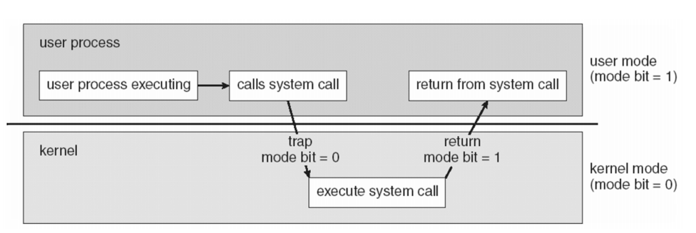
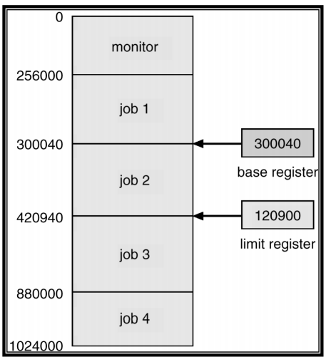
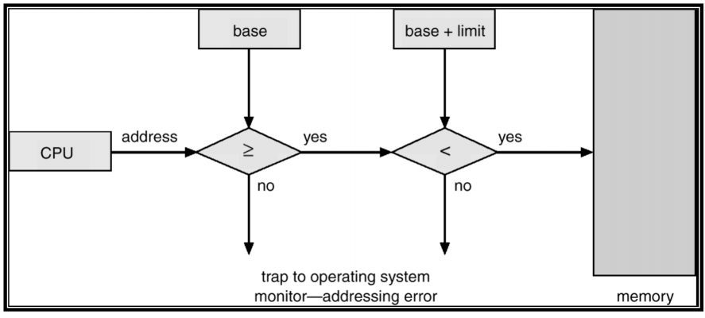
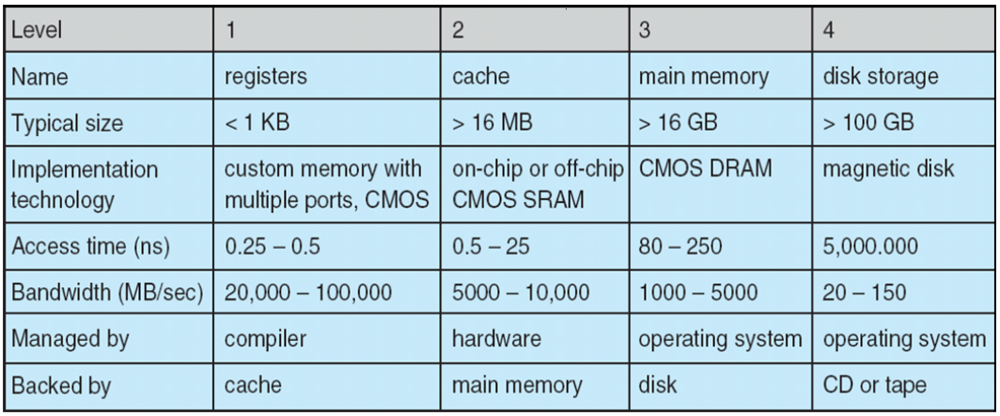
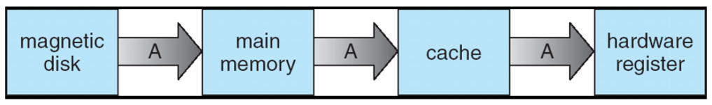
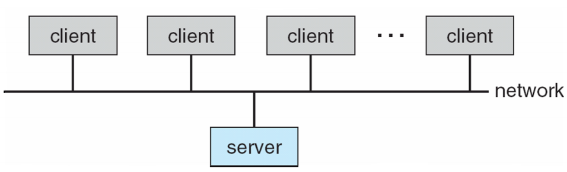

Operating System Introduction
What is an Operating System?
Operating System is a software that controls the execution of programs and that provides services such as resource allocation, scheduling, input/output control, and data management.
The OS acts as an intermediary between a user of the computer and the computer hardware.
OS goals:
- Execute user programs and make solving user problems easier.
- Make the computer hardware in an efficient manner. (efficient manner - time and space efficiency, 大O表示的那个)
Computer System Components
- Hardware - provides basic computing resources(CPU, memory, I/O devices).
- Operating System - controls and coordinates the use of the hardware among the various users.
- Application programs - define the ways in which the system resources are used to solve the computing problems of the users (compiler, database systems, video games, business programs).
- Users - people, machines, other computers.
Abstract view of system components

Definitions
You can think of an Operating System as a:
- resource allocator - manages and allocates resources.
- control program - controls the execution of user programs and operations of I/O devices.
- Kernel - the one program running at all times (all else being application programs).
Computer Startup
A bootstrap program(引导程序) is loaded at power-up or reboot.
- Typically stored in ROM or EPROM (Electrically Programmable Read-Only-Memory可擦可编程只读存储器), generally known as firmware(固件).
- Initializes all aspects of the system.
- Loads operating system kernel and starts execution.
Computer System Organization
Computer-system operation 计算机系统操作
One or more CPUs, device controllers connect through a common bus providing access to shared memory.
(一个或多个CPU、设备控制器通过一条公共总线连接，以提供对共享内存的访问。)

Interrupts
We want the I/O devices and the CPU to be able to execute concurrently.
- The CPU shouldn't have to wait for the much slower I/O device.
The I/O device signals an interrupt when it is ready. (I / O设备准备就绪时会发出“中断”信号。)
When an interrupt occurs, the operating system must:
- Transfer control to the appropriate interrupt handler.
- Since there is more than one device, we use an interrupt vector (中断向量).
Interrupts: Controllers vs. Handlers
A device controller (hardware / firmware) is responsible for moving data between the media and its local registers.
An interrupt handler (software) is responsible for moving data between the controller registers and memory (so it can be accessed by the user program).
- Since these are multiple types of interrupts, there is a handler for each type.
Processing an Interrupt
User program has control
I/O interrupt occurs
- eg. disk controller signals data read operation completed. (磁盘控制器发出数据读取操作已完成的信号。)
User program no longer processed by the CPU
- current position saved (Program Counter) and interrupt disabled.
Control transferred to interrupt handler (控制权转移到中断处理程序)
- CPU registers representing current state are saved. (保存代表当前状态的CPU寄存器。)
Data transferred from controller to memory or from memory to controller depending on whether input or output operation.
CPU registers restored. (CPU寄存器恢复)
Control returned to user program.
- interrupts re-enabled & restore program counter. (中断重新启用并恢复程序计数器)
I/O Structure
The CPU and device controllers operate in parallel.
Two types of I/O operations:
- synchronous(同步): user program waits until I/O operation completes.
- asynchronous(异步): user program allowed to continue while I/O operation is in progress.
xxxxxxxxxx21如何区分是同步IO还是异步IO？2- 当请求被阻塞，就是同步IO，否则就是异步IOxxxxxxxxxx41同步IO的特点：2- 同步IO指的是用户进程触发I/O操作并等待或者轮询的去查看I/O操作是否就绪。3- 同步IO的执行者是IO操作的发起者。4- 同步IO需要发起者进行内核态到用户态的数据拷贝过程，所以这里必须有个阻塞。xxxxxxxxxx31异步IO的特点：2- 异步IO是指用户进程触发I/O操作以后就立即返回，继续开始做自己的事情，而当I/O操作已经完成的时候会得到I/O完成的通知。3- 异步IO的执行者是内核线程，内核线程将数据从内核态拷贝到用户态，所以这里没有阻塞。
Asynchronicity is essential for multiprogramming (=multi-tasking)
This allows program B to have control of the CPU while program A is waiting for I/O.
I/O Structure - Device Status Table
A device status table keeps track of which devices are busy, what they are doing for which program, and which programs are waiting for access to devices.

(idle 闲置的)
I/O Structure - Direct Memory Access (DMA)
Used for high-speed I/O devices able to transmit information at close to memory speeds.
Device controller transfers blocks of data from buffer storage directly to main memory without CPU intervention.
- Buffer（缓冲区）是系统两端处理速度平衡（从长时间尺度上看）时使用的。它的引入是为了减小短期内突发I/O的影响，起到流量整形的作用。比如生产者——消费者问题，他们产生和消耗资源的速度大体接近，加一个buffer可以抵消掉资源刚产生/消耗时的突然变化。
- Cache（缓存）则是系统两端处理速度不匹配时的一种折衷策略。因为CPU和memory之间的速度差异越来越大，所以人们充分利用数据的局部性（locality）特征，通过使用存储系统分级（memory hierarchy）的策略来减小这种差异带来的影响。
- 假定以后存储器访问变得跟CPU做计算一样快，cache就可以消失，但是buffer依然存在。比如从网络上下载东西，瞬时速率可能会有较大变化，但从长期来看却是稳定的，这样就能通过引入一个buffer使得OS接收数据的速率更稳定，进一步减少对磁盘的伤害。
Only one interrupt is generated per block, rather than one per byte.
Storage Structure
Typical (von Neumann) instruction-execution cycle
instruction loaded from main memory into CPU
- Main memory - only large storage media that the CPU can access directly.
instruction decoded
- may cause other operands to be retrieved(恢复) from memory.
instruction executed, repeat
Secondary storage - extension of main memory that provides large nonvolatile(非易失性) storage capacity.
Magnetic Disks 磁盘
Magnetic disks - rigid metal or glass platters covered with magnetic recording material. (覆盖有磁记录材料的刚性金属或玻璃盘片。)
- Disk surface is logically divided into tracks, which are subdivided into sectors. (磁盘表面在逻辑上分为磁道，这些磁道又细分为扇区。)
- The disk controller determines the logical interaction between the device and the computer.
Magnetic Disk Architecture

Solid-State Drives 固态硬盘
Solid-State Drives use NAND Flash technology (50 megabytes / s)
Bits stored as charges in cells made of transistors(晶体管). (位作为电荷存储在晶体管构成的单位中)
SLC, MLC, and TLC drives differ in how many bits are stored per cell.
- SLC = Single-Level Cell ，即1bit/cell，速度快寿命长，价格超贵（约MLC 3倍以上的价格），约10万次擦写寿
- MLC = Multi-Level Cell，即2bit/cell，速度一般寿命一般，价格一般，约1000--3000次擦写寿命
- TLC = Trinary-Level Cell，即3bit/cell，也有Flash厂家叫8LC，速度慢寿命短，价格便宜，约1000次擦写寿命。
Organization: 8 channels, 4 dies per channel.
Caching 缓存
Caching is the use of a smaller, but faster, memory system to speed up a bigger, but slower,memory system.
- The cache holds the data most recently accessed by the CPU
- effective because most programs access the same data or instruction repeatedly.
Cache management is an important design problem. A well chosen cache size and replacement policy can result in 80+% of all accesses being in the cache.
Problem:
- Different processes must see the same value for an item.
Storage Hierarchy

How a Modern Computer Works

CPU(*N) = multiple CPUs
DMA = Direct Memory Access
Mainframe Systems 大型计算机系统
(Super Computers)
Mainframes are large, powerful computers designed to handle large numbers of users and jobs.
The first operating systems appeared in mainframes
- Similar jobs batched together to reduce set-up time.
- One job executed at a time - no multi-tasking.
The OS (called a monitor) transfers control to the job, when the job is done control is return to the OS.

The next step up is the Multiprogrammed Batch System (多程序批处理系统)
- Several jobs are kept in main memory at the same time, and the CPU is multiplexed among them. (几个作业同时保存在主存储器中，并且CPU在其中复用)
- Each job has its own memory space.

Some of the OS features needed for Multiprogramming:
I/O routine supplied by the system (系统提供的I/O例行程序)
Memory management (内存管理)
- The system must allocate memory to many jobs.
CPU scheduling
- The system must choose among several jobs ready to run. (系统必须在准备运行的几个作业中进行选择。)
Allocation of devices (storage devices, etc.) (设备分配)
Desktop Systems
Personal computers - computer system dedicated(专用) to a single user.
I/O devices - keyboards, mice, monitors, printers.
User convenience and responsiveness. (用户便利性和响应能力。)
Can adopt technology developed for larger operating systems. (可以采用为大型操作系统开发的技术。)
- Individuals have full use of computer and do not need advanced CPU utilization or protection features. (个人可以充分使用计算机，不需要高级CPU利用率或保护功能。)
May run several different types of operating systems (Windows, Mac OS/X, UNIX, Linux)
Multiprocessor Systems 多处理器系统
Multiprocessor systems are systems with more than one CPU in close communication. (多处理器系统是具有多个CPU紧密通信的系统。)
- e.g. multi-core CPUs
This is a tightly coupled system (这是一个紧密耦合的系统)
- processors share memory and a clock.
- communication occurs via shared memory.
Advantages of parallel system(并行系统):
- Increased throughput
- Economical
- Increased reliability
Types of Multiprocessor Systems
Symmetric multiprocessing (SMP)
- Each processor runs an identical copy of the operating system.
- Many processes can run at once without performance deterioration(降低性能）.
- Most modern Oses support SMP.
Asymmetric multiprocessing
- Each processor is assigned a specific task.
- Master processor schedules and allocates work to slave processors.
Symmetric & Multi-core Processors

Distributed Systems 分布式系统
Another idea is to distribute the computation among several physical processors.
This is a loosely coupled system
- each processor has its own local memory (RAM).
- processes communicate with one another via networks (eg. LANs or WANs)
Real-Time Systems 实时系统
A real-time system is one where there are well-defined fixed-time constraints. (实时系统是存在明确定义的固定时间约束的系统。)
- i.e. things need to happen in a reasonable amount of time and in the correct order.
Some examples:
- controlling robots for manufacturing.
- controlling medical devices.
Handheld Systems 手持系统
Some examples:
- Personal Digital Assistants (PDAs) 个人数字助理
- Smartphones
Some of the issues when designing handheld systems:
- limited memory
- slow processors
- small display screens
OS Feature Migration 操作系统功能迁移
Operating system features tend to migrate over time from older systems to newer systems.

Operating System Structure
Multiprogramming
Multiprogramming is needed for efficiency
- A single user cannot keep CPU and I/O devices busy at all times!
- Multiprogramming organizes jobs (code and data) so CPU always has one to execute.
- A subset of total jobs in system is kept in memory
- One job is selected and run via job scheduling.
- When it has to wait (for I/O for example), OS switches to another job.
Timesharing (multitasking)
Timesharing (multitasking) is logical extension in which CPU switches jobs so frequently that users can interact with each job while it is running, creating interactive computing.(分时共享（多任务）是逻辑扩展，其中CPU频繁切换作业，以便用户可以在每个作业运行时与之交互，从而创建交互式计算。)
- Response time should be <1 second.
- If each user has at least one program executing in memory → process (如果每个用户在内存中至少有一个程序正在执行→处理)
- If several jobs are ready to run at the same time → CPU scheduling (如果准备好同时运行多个作业，请执行→CPU调度)
- If processes don't fit in memory, swapping moves them in and out to run.
- Virtual memory allows execution of processes not completely in memory.
Hardware Protection
Dual Mode
Sharing system resources requires OS to ensure that an incorrect program cannot cause other programs to execute incorrectly.
Dual-Model operation: Provide hardware support to differentiate between at least two modes of operations:
- User mode: Execution done on behalf of the user.(代表用户执行完成。)
- Monitor mode (also kernel mode or system mode): execution done on behalf of the OS.(代表操作系统执行完成。)
Instruction set is restricted in user mode. (指令集在用户模式下受限制)
A program, running in user mode, attempting to execute a privileged instruction will cause a trap. (在用户模式下运行的程序尝试执行特权指令将导致陷入困境)
System Calls 系统调用
System calls are used to request services from the OS
- e.g. give me the current date/time, open a file for reading, etc.
Executing a system call changes mode to kernel, return from call resets it to user.

I/O & Memory Protection
We must ensure that I/O devices are protected as well, to have I/O protection we ensure:
- All I/O instructions are privileged instructions. (所有I / O指令均为特权指令。)
We must also ensure that processes (jobs) are not able to access each other's memory space.
- User jobs must also not be able to access the interrupt handlers or interrupt vectors.
Memory Protection
In order to have memory protection, add two registers that determine the range of legal addresses a program may access:
- base register - holds the smallest legal physical memory address.
- limit register - holds the size of the job.
- both base and limit registers are in CPU, but not in memory
- both base and limit registers are containing in job (process) itself.

Checking memory addresses in hardware:
- start address = base
- end address = base + limit

CPU Protection
We must also ensure that no one job is using up all the CPU cycles(CPU周期).
Timer - interrupts computer after specified period to ensure operating system maintains control.
- Timer is decremented every clock tick.
- When timer reaches 0, interrupt occurs.
The timer is commonly used to implement time sharing(时间共享).
System Components
Process Management
A process is a program in execution. It is a unit of work within the system. (进程是正在执行的程序。 它是系统内的工作单元。)
- A program is a passive entity.(程序是被动实体)
- A process is an active entity. (进程是一个活动实体。)
A process needs resources to accomplish its task.
- e.g. CPU, memory, I/O devices, files.
Process termination requires reclaiming of any reusable resources. (进程终止要求回收任何可重复使用的资源。)
A single-threaded process has one program counter specifying location of next instruction to execute. (单线程进程具有一个程序计数器，该计数器指定要执行的下一条指令的位置。)
- A process generally executes instructions sequentially until completion.
A multi-threaded process has one program counter per thread.
Typically a system has many processes, some user, some operating system running concurrently on one or more CPUs.
The operating system is responsible for the following activities in connection with process management.
Process creation and deletion.
Process suspension and resumption. (进程的暂停和恢复。)
Provision of mechanisms for: (提供以下机制)
- process synchronization (进程同步)
- process communication
- deadlock handling (死锁处理)
Main Memory Management
Memory is a large array of words or bytes, each with its own address.
Main memory is a volatile storage device. (主存储器是易失性存储设备。)
The operating system is responsible for the following activities in connection with memory management:
- Keep track of which parts of memory are currently being used and by whom.
- Decide which processes to load when memory space becomes available.
- Allocate and deallocate memory space as needed.
File Management
A file is a collection of related information defined by its creator.
The operating system is responsible for the following activities in connection with file management:
- File / directory creation and deletion.
- Support of primitives for manipulating files and directories. (支持用于操作文件和目录的原语。)
- Access control available on most systems.(大多数系统上都可以使用访问控制。)
- Mapping files onto secondary storage. (将文件映射到辅助存储。)
- File backup on stable storage media. (在稳定的存储介质上备份文件。)
Secondary Storage Management
Since main memory (primary storage) is volatile and too small to accommodate all data and programs permanently, the computer system must provide secondary storage to back up main memory.
Most modern computer system must provide secondary storage to back up main memory.
The operating system is responsible for the following activities in connection with disk management:
- Free space management
- Storage allocation
- Disk scheduling
Performance of Various Levels of Storage
Movement between levels of storage hierarchy can be explicit or implicit.

Migration of Integer A from Disk to Register
Multi-tasking environments must be careful to use most recent value, no matter where it is stored in the storage hierarchy.

Multiprocessor environment must provide cache coherency in hardware such that all CPUs have the most recent value in their cache. (多处理器环境必须在硬件中提供高速缓存一致性，以便所有CPU在其高速缓存中具有最新值。)
Distributed environment situation even more complex.
- several copies of a datum can exist.
I/O System Management
- One purpose of OS is to hide peculiarities of hardware devices from the user. (OS的目的之一是向用户隐藏硬件设备的特性。)
The I/O system consist of:
A buffer-caching system
A general device-driver interface
- Device driver: set of interrupt handlers for a device controller.
Drivers for specific hardware devices.
Protection and Security
(protection & security are different)
Protection - any mechanism for controlling access of processes or users to resources defined by the OS.
Security - defense of the system against internal and external attacks.
- eg, denial-of-service(拒绝服务), viruses, identity theft.
Systems generally first distinguish among users, to determine who can do what.
- User identities (user IDs, security IDs) include name and associated number, one per user.
- User ID then associated with all files, processes of that user to determine access control.
- Group identifier (group ID) allows set of users to be defined and controls managed, then also associated with each process, file.
- Privilege escalation allows user to change to effective ID with more rights.
Computing Environments
Client-Server Computing
Dumb terminals supplanted by smart PCs. (笨拙的终端被智能PC取代。)
Many systems now servers, responding to requests generated by clients.
- Compute-server: provides interface for client to access certain services (eg, database).
- File-server: provides interface for clients to store and retrieve files.

Peer-to-Peer Computing
Another model for a distributed system
P2P does not distinguish clients and servers
All nodes are considered peers.
May each act as client, server, or both.
Node must join P2P network
- registers its service with central lookup service on network (在网络上的中央查找服务中注册其服务), or
- broadcast request for service and respond to requests for service via discovery protocol (广播服务请求并通过发现协议响应服务请求。).
Examples include Napster and Gnutella
Web-Based Computing
- Web has become ubiquitous (无所不在的).
- More devices becoming networked to allow web access.
- New category of devices to manage web traffic among similar servers: load balancers. (用于管理类似服务器之间的网络流量的新设备类别：负载均衡器)
- Use of operating systems like Windows 95, client-side, have evolved into Linux, Mac OS/X and Windows 7/10, which can be clients and servers.
Open-Source Operating Systems
- Operating systems made available in source-code format rather than just binary closed-source.
- Counter to the copy protection and Digital Rights Management (DRM) movement. (与版权保护和数字版权管理（DRM）运动背道而驰。)
- Started by Free Software Foundation (FSF), which has "copyleft" GNU public License (GPL). (由具有“ 非盈利版权” GNU公共许可证（GPL）的自由软件基金会（FSF）启动。)
- Examples include GNU/Linux and BSD UNIX (including core of Mac OS X).